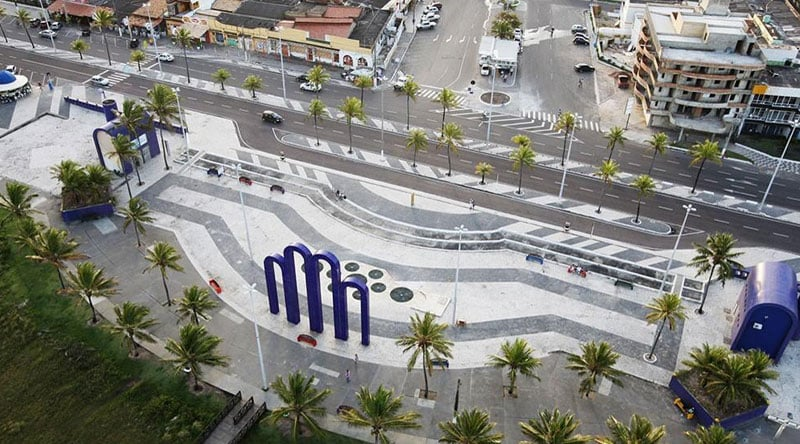

Praia de Atalaia
 na orla de Atalaia existem opções de basquete, futebol, tênis e uma pista deskate.
Considerada uma das mais bonitas do Bs de lazer como bares e casas de dança e música,
além de barracas de áqua de coco e Brasil, oferece aos cidadãos e turistas o que há de
melhor em lazer e entretenimento.
Roteiro turistico em 1 dia
- Café da manhã em uma das barracas da orla.
- Caminhada até os Arcos da Atalaia para fotos.
- Visita ao Oceanário de Aracaju (Projeto tamar).
- Almoço com frutos do mar.
- Tarde livre para banho de mar e esportes.
- Fim de tarde com áqua de coco observando o pôr do sol.